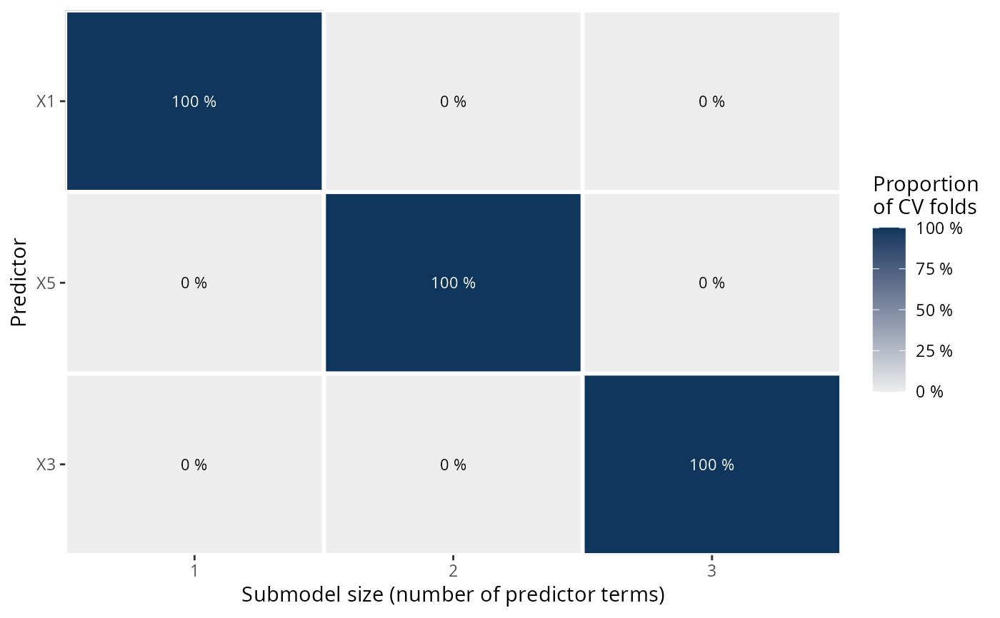

Plot ranking proportions from fold-wise predictor rankings
Source:R/methods.R
plot.cv_proportions.RdPlots the ranking proportions (see cv_proportions()) from the fold-wise
predictor rankings in a cross-validation with fold-wise searches. This is a
visualization of the transposed matrix returned by cv_proportions(). The
proportions printed as text inside of the colored tiles are rounded to whole
percentage points (the plotted proportions themselves are not rounded).
Arguments
- x
For
plot.cv_proportions(): an object of classcv_proportions(returned bycv_proportions(), possibly withcumulate = TRUE). Forplot.ranking(): an object of classranking(returned byranking()) thatcv_proportions()will be applied to internally before then callingplot.cv_proportions().- text_angle
Passed to argument
angleofggplot2::element_text()for the y-axis tick labels. In case of long predictor names,text_angle = 45might be helpful (for example).- ...
For
plot.ranking(): arguments passed tocv_proportions.ranking()andplot.cv_proportions(). Forplot.cv_proportions(): currently ignored.
Author
Idea and original code by Aki Vehtari. Slight modifications of the original code by Frank Weber, Yann McLatchie, and Sölvi Rögnvaldsson. Final implementation in projpred by Frank Weber.
Examples
# Data:
dat_gauss <- data.frame(y = df_gaussian$y, df_gaussian$x)
# The `stanreg` fit which will be used as the reference model (with small
# values for `chains` and `iter`, but only for technical reasons in this
# example; this is not recommended in general):
fit <- rstanarm::stan_glm(
y ~ X1 + X2 + X3 + X4 + X5, family = gaussian(), data = dat_gauss,
QR = TRUE, chains = 2, iter = 1000, refresh = 0, seed = 9876
)
# Run cv_varsel() (with L1 search and small values for `K`, `nterms_max`, and
# `nclusters_pred`, but only for the sake of speed in this example; this is
# not recommended in general):
cvvs <- cv_varsel(fit, method = "L1", cv_method = "kfold", K = 2,
nterms_max = 3, nclusters_pred = 10, seed = 5555)
#> Fitting model 1 out of 2
#> Fitting model 2 out of 2
# Extract predictor rankings:
rk <- ranking(cvvs)
# Compute ranking proportions:
pr_rk <- cv_proportions(rk)
# Visualize the ranking proportions:
gg_pr_rk <- plot(pr_rk)
print(gg_pr_rk)

# Since the object returned by plot.cv_proportions() is a standard ggplot2
# plotting object, you can modify the plot easily, e.g., to remove the
# legend:
print(gg_pr_rk + ggplot2::theme(legend.position = "none"))